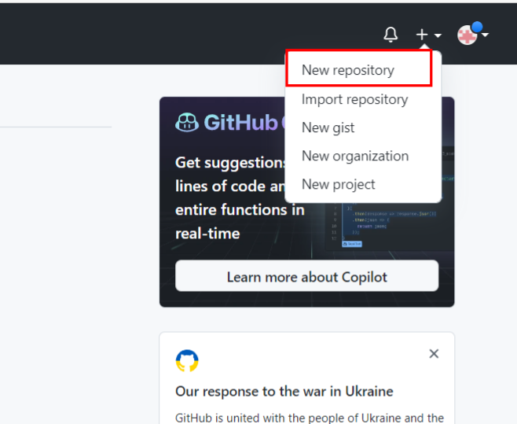
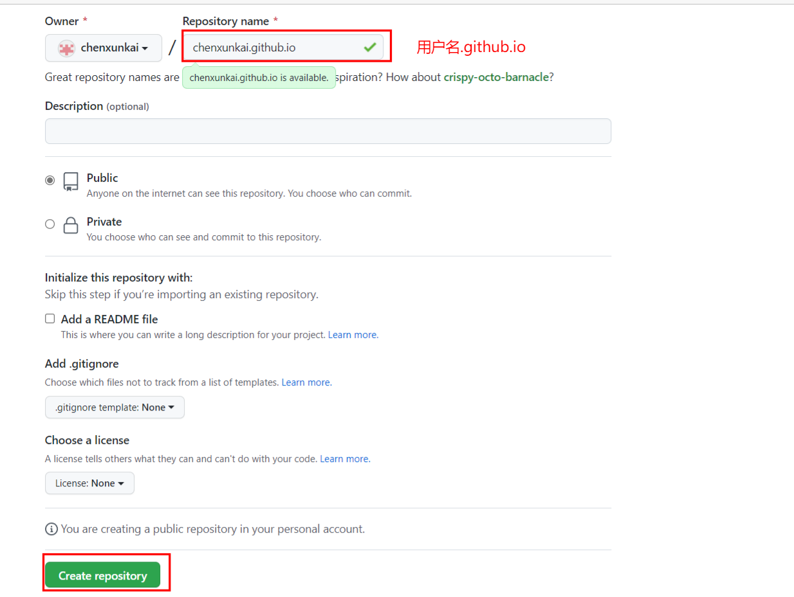

博客搭建-Hexo
初始Hexo博客
新建github仓库


创建Blog文件
在创建的文件夹 Blog 下，鼠标右键打开 Git Bush Here，输入 npm 命令安装 Hexo：
1 | npm install -g hexo-cli |
安装完成后，输入 hexo init 命令初始化博客：
1 | hexo init |
再接着执行命令 hexo g 进行静态部署
1 | hexo g |
这时网页已经部署完成，接着输入命令 hexo s 即可：
1 | hexo s |
此时浏览器输入 http://localhost:4000 就可以打开新部署的网页了
将 Hexo 部署到 GitHub
配置_config.yml
回到文件夹 Blog 下,用编辑器打开文件 _config.yml ,找到 deploy 配置项:
1 | deploy: |
安装部署插件
1 | npm install hexo-deployer-git --save |
然后分别输入以下三条命令：
1 | hexo clean #清除缓存文件 db.json 和已生成的静态文件 public |
完成以后，打开浏览器，输入 https://xxx.github.io 就可以打开你的网页了
注意：若出现ssl相关错误，设置如下：
1 | git config --global http.sslVerify false |
主题配置
Butterfly主题
1 | npm i hexo-theme-butterfly |
应用Butterfly主题
回到文件夹 Blog 下,用编辑器打开文件 _config.yml
1 | theme: butterfly |
安装依赖插件
如果你沒有 pug 以及 stylus 的渲染器，請下載安裝：
1 | npm install hexo-renderer-pug hexo-renderer-stylus --save |
升级建议及其他配置项
https://butterfly.js.org/posts/21cfbf15/
编写及发布博客
创建博客
Hexo 有三种默认布局(即模板)：post、page 和 draft。
在创建这三种不同类型的文件时，它们将会被保存到不同的路径；而您自定义的其他布局(模板)和 post 相同，都将储存到 source/_posts 文件夹
1 | hexo new [layout] <title> |
layout参数如下：
| 布局（layout） | 路径 |
|---|---|
| post（默认） | source/_posts |
| page（页面） | source |
| draft（草稿） | source/_drafts |
draft（草稿）：这种布局在建立时会被保存到 source/_drafts 文件夹，您可通过 publish 命令将草稿移动到 source/_posts 文件夹。
1 | hexo publish [layout] <title> |
草稿默认不会显示在页面中，您可在执行时加上 –draft 参数，或是把 render_drafts 参数设为 true 来预览草稿
模板：在新建文章时，Hexo 会根据 scaffolds 文件夹内相对应的文件来建立文件
1 | hexo new photo "My Gallery" |
在执行这行指令时，Hexo 会尝试在 scaffolds 文件夹中寻找 photo.md，并根据其内容建立文章，以下是您可以在模版中使用的变量：
| 变量 | 描述 |
|---|---|
| layout | 布局 |
| title | 标题 |
| date | 文件建立日期 |
自定义文章路径：默认情况下，Hexo 会使用**文章(post)的标题来决定文章文件的路径。对于独立页面(page)**来说，Hexo 会创建一个以标题为名字的目录，并在目录中放置一个 index.md 文件。你可以使用 –path或者-p 参数来覆盖上述行为、自行决定文件的目录：
1 | 独立页面(page) |
发布博客（更新）
1 | #清除缓存文件 db.json 和已生成的静态文件 public |
保存博客源码
新建GitHub仓库
新建GitHub仓库，仓库目录同hexo目录名一致
在hexo博客目录下，执行以下命令：
1 | git init |
新建.gitignore文件
在Hexo目录新建.gitignore文件,如下：
1 | .DS_Store |
上传源码
1 | git add . |
自动上传源码
流程：在执行hexo d 部署命令时，自动执行git备份
实现：
安装shelljs模块
1
npm install --save shelljs
在Hexo目录新建scripts文件夹,新建js文件（文件名随意）,添加如下代码
注意：cd('E:/Blog/')此处需修改为Hexo文件夹绝对路径
1 | require('shelljs/global'); |
注意：cd('E:/Blog/')此处需修改为Hexo文件夹绝对路径
成功后会类似如下效果
1 | ======================Auto Backup Begin=========================== |